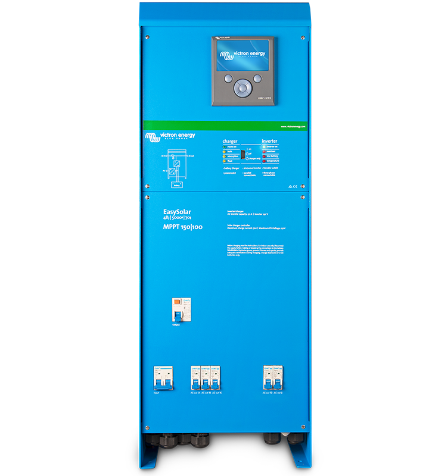

The Fast Smart Solar MPPT charge controller

The solar smart MPPT solar charge controller charges and stores energy into depleted batteries using energy from solar panels. The fast MPPT technology makes sure that all the energy is stored and the smart solar charge controller can be used even on a cloudy day. You can use the internet or pair your smartphone with Bluetooth to use the MPPT. In this way you can change several settings with full control. More info
The Multifunctional Multiplus

This is a inverter and a charger all in one. It not only stores energy from solar panels that is then made useable within your home but also charges your appliances. The Multiplus is very fast and therefore will keep operating even when there is grid failures or the generated power is disconnected. This is very useful especially in high power cut areas. You can also use the app and website: free VRM portal to control and monitor the system. It is truly next level multifunctional technology. More info
All in one Victron EasySolar
What if you want both the MPPT solar charge and the Inverter, charger? Well then the easy solar is what you need it combines both these technologies in one. Not only does it store energy charge you’re appliances and your batteries but it also has AC distribution. As in its name its easy to install and not much wiring required. Don’t miss out on this amazing easy to use technology to pair with your solar system. More info